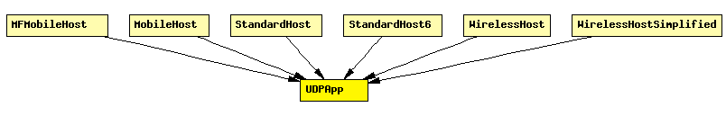

File: Applications/UDPApp/UDPApp.ned
Template for UDP applications.
This is not an actual module type. It only shows which gates an UDP app needs, to be able to be used in StandardHost etc.
The following diagram shows usage relationships between modules, networks and channels. Unresolved module (and channel) types are missing from the diagram. Click here to see the full picture.
If a module type shows up more than once, that means it has been defined in more than one NED file.
| MFMobileHost | Models a mobile host with a wireless (802.11b) card in ad-hoc mode. This model contains the Mobility Framework's 802.11 implementation, Nic80211, and IP, TCP and UDP protocols. The mobility model can be dynamically specified with the mobilityType parameter. |
| MobileHost | Models a mobile host with a wireless (802.11b) card in ad-hoc mode. This model contains the new IEEE 802.11 implementation, Ieee80211Nic, and IP, TCP and UDP protocols. The mobility model can be dynamically specified with the mobilityType parameter. |
| StandardHost | |
| StandardHost6 | |
| WirelessHost | Models a host with one wireless (802.11b) card in infrastructure mode. This module is basically a StandardHost with an Ieee80211NicSTA added. It should be used in conjunction with WirelessAP, or any other AP model which contains Ieee80211NicAP. |
| WirelessHostSimplified | Models a host with one wireless (802.11b) card in infrastructure mode, but using a simplified NIC that does not support handovers. This module is basically a StandardHost with an Ieee80211NicSTASimplified added. It should be used in conjunction with WirelessAPSimplified, or any other AP model which contains Ieee80211NicAPSimplified. |
| Name | Direction | Description |
|---|---|---|
| from_udp | input | |
| to_udp | output |
simple UDPApp gates: in: from_udp; out: to_udp; endsimple